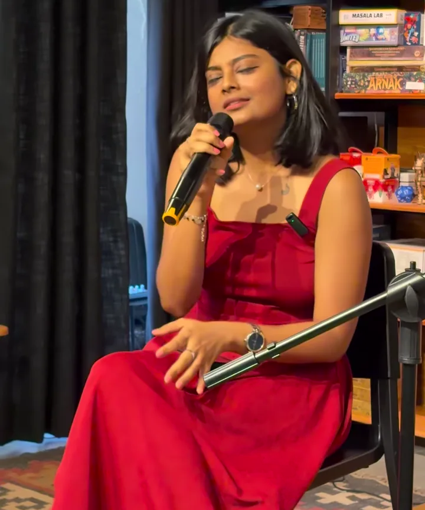
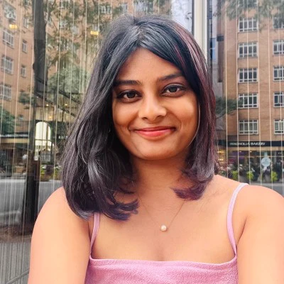

A live performance
Echoes
Spoken word and live music with Aditi Sinha.
30 or 60 minutes · For company offsites and leadership retreats

The show
Poems, songs and stories about ambition, belonging and the pressure to have life figured out.
29
Spoken word · 38 seconds
Because Luck Wears Lipstick
Poetry and ukulele · 36 seconds

The artist
Aditi Sinha
Aditi co-founded and led Locale.ai, which had raised $5 million in venture funding by 2024. She and her co-founder later chose to step away and return the remaining capital to investors.
She went on to publish Things I Learned While Falling Apart. Echoes brings her writing about ambition, identity and starting over to the stage through poetry and live music.
Bring Echoes
to your team.
For offsites, retreats and team gatherings. Aditi can tailor the poems and reflection prompts to your event.
Contact Aditi on LinkedInShare your event date, city and approximate group size.
- 30 minutes
- Poetry, acoustic music, stories and a moment to reflect.
- 60 minutes
- More of the show, with extra time for guided reflection.
Ask about tone and language for your audience. Founder talks are also available.